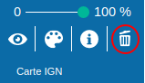

Généralités
Les cartes ont été profondément transformées par l'informatique.
Elles sont devenues interactives, permettent de changer d'échelle et
de manipuler un grand nombre d'informations.
Parmi ces cartes numériques, on peut distinguer notamment :
-
Google Maps qui est l'application la plus utilisée ;
-
Géoportail qui dispose de nombreuses informations d'intérêt public ;
-
OpenStreetMap qui est un projet de cartographie collaboratif et libre d'utilisation.
Les couches d'informations géographiques
Les systèmes de cartographie numérique permettent d'afficher un fond de carte (la carte de base) et d'y superposer des informations regroupées en couches.
Définition (couche d'informations) : Une couche d'information géographiques, c'est un calque que l'on superpose au fond de carte pour lui ajouter un ensemble d'informations cohérentes supplémentaires. Le fond de carte est lui même la première couche d'informations.
Par exemple dans Géoportail, on peut utiliser le menu DONNÉES THÉMATIQUES situé à gauche, pour rajouter des couches d'informations, comme les délimitations de communes ou de départements, les Hôpitaux ou les écoles, etc...
Dans Géoportail, le bouton situé en haut à droite indique
le nombre de couches actuellement affichées, 4 pour l'exemple ci-dessous :
Couches matricielles ou vectorielles
On distingue deux grandes catégories de couche de données sur les cartes numériques, selon la manière dont l'information est enregistrée.
-
Les couches matricielles (ou raster) qui se présentent sous forme d'image matricielle point par point.
L'image est divisée en pixels.
En zoomant suffisamment, les pixels deviennent visibles.
-
Les couches vectorielles (ou vector) qui comportent des données qui sont positionnés selon leurs coordonnées (points, lignes, polygones).
Ces objets sont affichés sans pixellisation à toutes les échelles, quelque soit le zoom appliqué.
Typiquement, les images qui servent de fond de carte sont des données de type matriciel et la plupart des couches que l'on superposent par dessus sont de type vectoriel.
Ajouter une couche d'informations dans Géoportail
Pour rajouter une couche d'information dans géoportail :
-
1. cliquer sur le bouton qui se trouve en haut à droite dans Géoportail :
-
2. cliquer ensuite en dessous sur le bouton
+ DE DONNÉES :
-
3. dans le menu déroulant à gauche DONNÉES THÉMATIQUES,
choisir une rubrique, par exemple Territoires et transports.
-
4. dans le menu déroulant suivant à gauche, choisir une rubrique, par exemple
Pouvoirs publics :
-
5. Choisir alors le type d'information souhaitée.
-
6. Pour enlever une couche d'information dans Géoportail, il faut cliquer en haut à droite
sur le bouton pignon comme ci-dessous, puis sur la corbeille :
puis 
Faire des calculs dans Géoportail
Pour calculer une distance, un dénivelé ou une surface dans Géoportail :
-
1. cliquer sur le bouton boîte à outils qui se trouve en haut à droite dans Géoportail :
-
2. cliquer ensuite en dessous sur Mesures:
-
3. dans le menu déroulant, choisir la rubrique qui vous intéresse :
Mesurer une distance ou
Mesurer une surface ou
Etablir un profil altimétrique, ...
Quiz 5